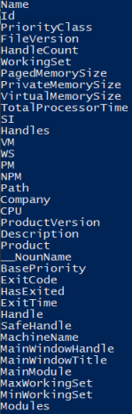

Format-List (fl)
Pipelining commandsFor most shells(including linux), when we run a command and pipe its results to another command, we are simply sending the Standard Output(typically ASCII) of the first command into the Standard Input of the second command.
With Powershell instead
we are piping objectsFormat-List has the alias fl
examplesPS> ps | format-list -Property name, id,starttime
for each process
format-list that show us process information
-Property <name,id,startime,..> can specify properties we want to see.
PS> ps | format-list -Property *
To see all the properties of all the processes
